Timing Belt: Service and Repair
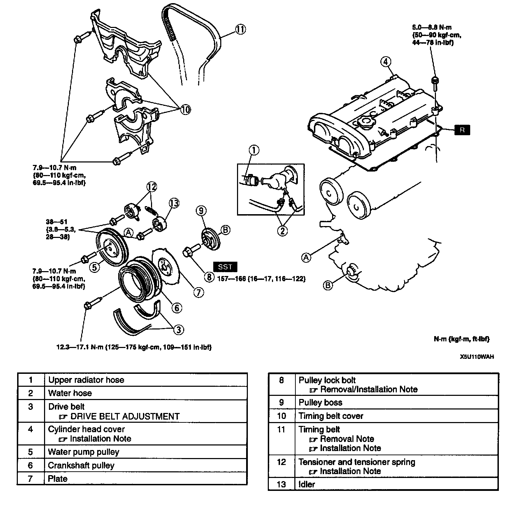
TIMING BELT REMOVAL/INSTALLATION
1. Disconnect the negative battery cable.
2. Drain the engine coolant.
3. Remove the air hose.
4. Remove the camshaft position sensor and crankshaft position sensor.
5. Remove the high-tension lead and ignition coil. Ignition System
6. Remove the spark plug.
7. Remove in the order indicated in the table.
8. Install in the reverse order of removal.
9. Verify the air gap. Refer to Powertrain Management.
10. Start the engine and
1. Inspect for the pulleys and drive belt for runout and contact.
2. Verify the ignition timing. Ignition Timing
Pulley Lock Bolt Removal/installation Note
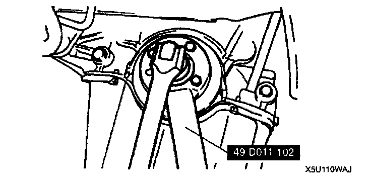
^ Hold the crankshaft by using the Special Service Tool (SST)
Timing Belt Removal Note
1. Install the pulley boss.
2. Install the pulley lock bolt.
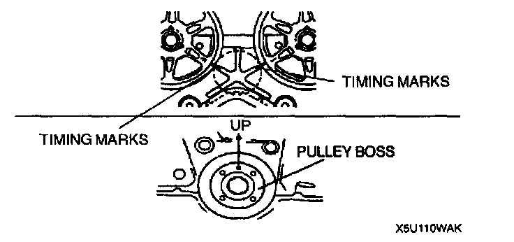
3. Turn the crankshaft clockwise and face the pin on the pulley boss straight up and align the timing marks.
4. Loosen the tensioner lock bolt.
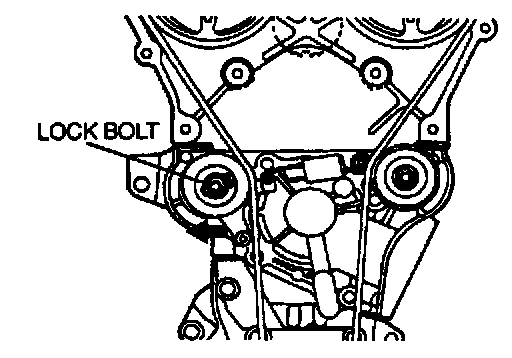
5. Push the tensioner in the direction of the arrow and hand-tighten the lock bolt.
6. Remove the pulley lock bolt.
7. Remove the pulley boss.
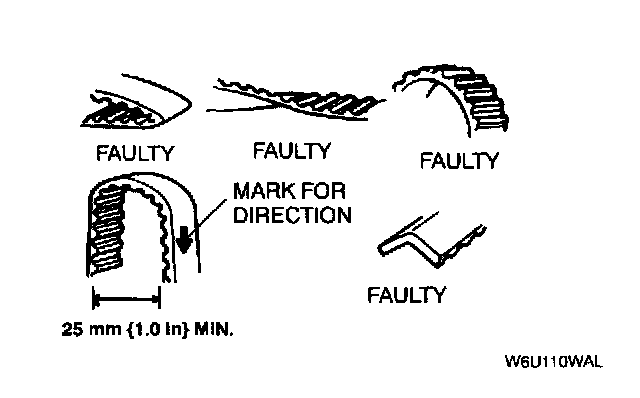
Caution:
^ The following will damage the belt and shorten its life; forcefully twisting it, turning it inside out, or allowing oil or grease on it.
Note:
^ Mark the timing belt rotation on the belt for proper reinstallation.
Tensioner and Tensioner Spring Installation Note
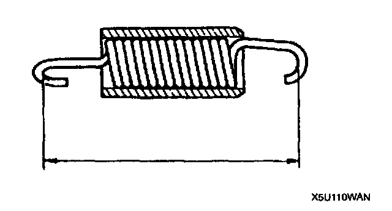
1. Measure the tensioner spring free length. If not within the specification, replace the tensioner spring.
Free length: 59.2 mm (2.33 inch)
2. Install the tensioner.
3. Install the tensioner spring with the damper rubber closing face on the right side.
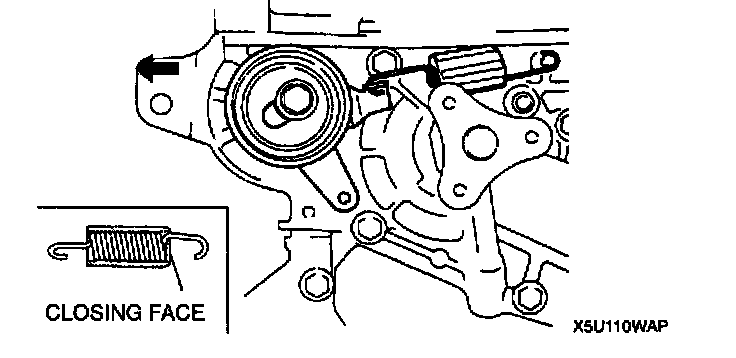
4. Temporarily secure the tensioner with the spring fully extended.
Timing Belt Installation Note
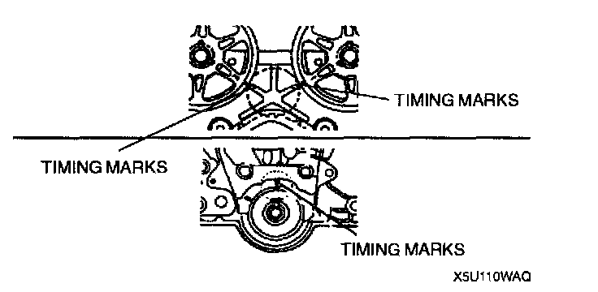
1. Verify that the timing belt pulley mark and camshaft pulley marks are aligned with the timing marks as shown.
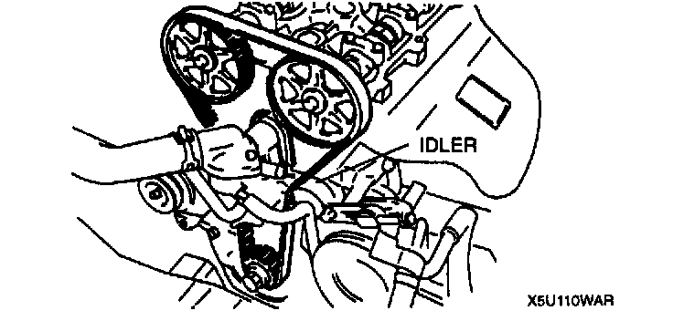
2. Install the timing belt so that there is no looseness at the idler side and between the camshaft pulleys.
3. Install the pulley boss and pulley lock bolt.
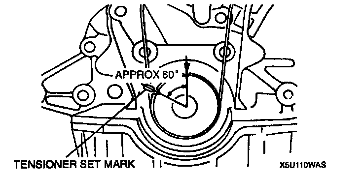
4. Turn the crankshaft clockwise 1 and 5/6 times, and align the timing belt pulley mark with the tensioner set mark for proper timing belt tension adjustment.
5. Hold the crankshaft by using the Special Service Tool (SST), and remove the pulley lock bolt and the pulley boss.
6. Verify that the timing belt pulley mark is aligned with the tensioner set mark.
Caution:
^ Be sure not to apply tension other than that of the tensioner spring.
7. Loosen the tensioner lock bolt to apply tension to the timing belt.
Caution:
^ Avoid the tensioner from moving with the tensioner lock bolt as it is turned.
8. Tighten the tensioner lock bolt.
Tightening torque: 38 - 51 Nm (3.8 - 5.3 kgf.m, 28 - 38 ft. lbs.)
9. Install the pulley boss and the pulley lock bolt.
10. Turn the crankshaft 2 and 1/6 times, and face the pin on the pulley boss straight up.
11. Verify that the camshaft pulley marks are aligned with the timing marks as shown.
12. If not, repeat from Timing Belt Removal Note.
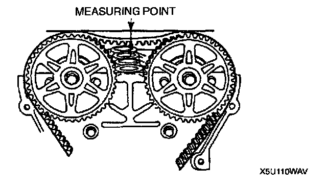
13. Inspect the timing belt deflection at the point indicated by applying moderate pressure 98 N (10 kgf, 22 lbs.).
Timing belt deflection: 8.5 - 11.5 mm (0.35 - 0.45 inch)
14. If not as specified, repeat from step 4.
Cylinder Head Cover Installation Note
1. Verify that the grooves on the cylinder head cover are free of oil, water and other foreign material.
2. Install the cylinder head cover gasket into the cylinder head cover.
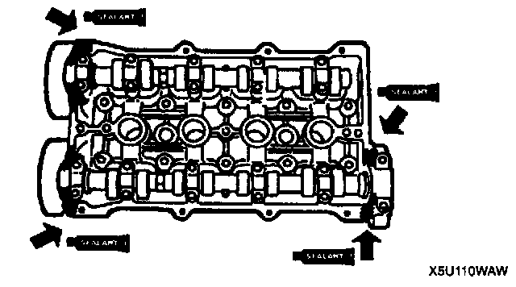
3. Apply silicone sealant to the cylinder head as shown.
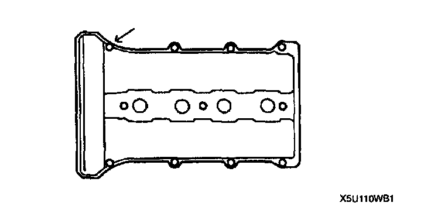
4. Hand-tighten the cylinder head cover bolt as shown.
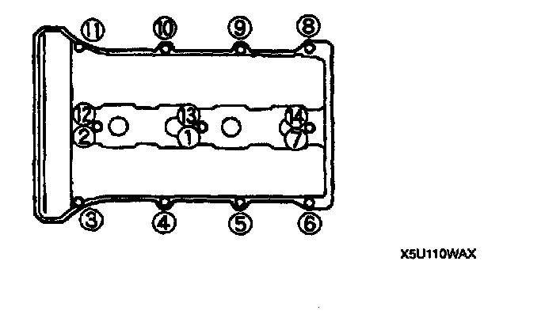
5. Tighten the cylinder head cover bolts in two or three steps in the order shown.